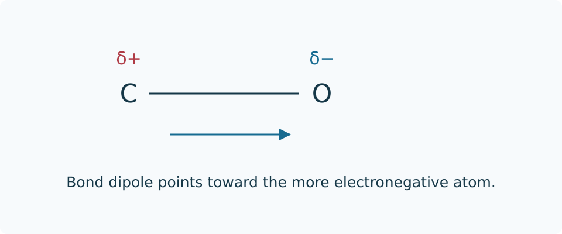
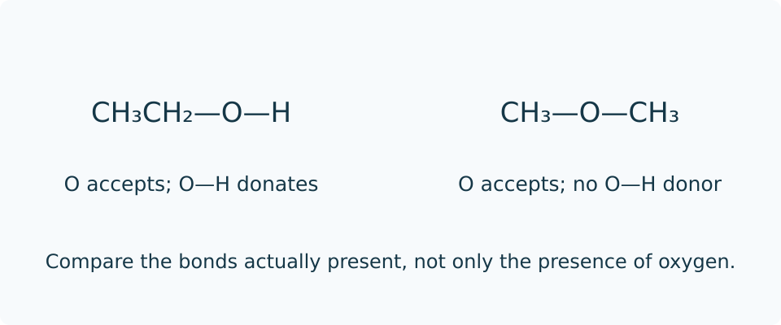
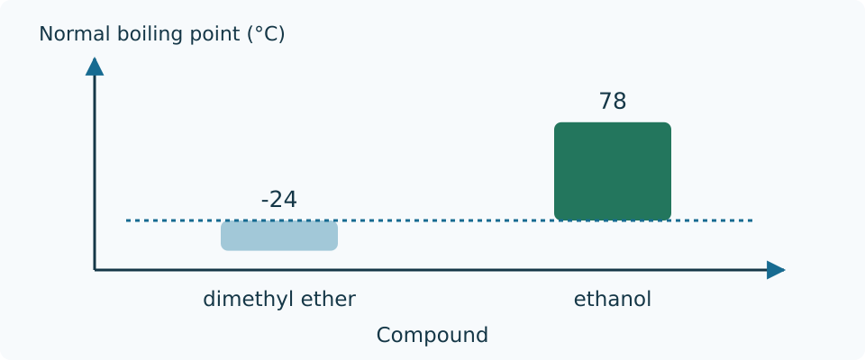
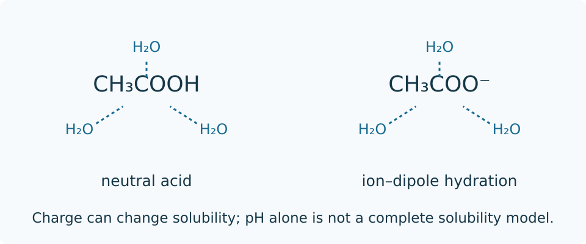

Use simple IR evidence alongside structural reasoning.
A bond can share electrons unequally

A carbon-oxygen bond with partial positive carbon and partial negative oxygen.
δ+ and δ− mark partial charges. They are not the integer formal charges assigned in a Lewis structure.
The molecular shape determines the sum
Opposing CO2 dipoles cancel whereas bent-water dipoles combine.
Dipoles are vectors. A molecule with polar bonds can have no net permanent dipole when symmetry makes them cancel.
Hydrogen bonding has a direction
An alcohol O-H donor contacts a second oxygen lone-pair acceptor.
A donor needs a suitable X–H bond, usually O–H or N–H here; an acceptor needs a suitable available lone pair.
An ether accepts but cannot donate O–H

Ethanol donates and accepts hydrogen bonds; dimethyl ether accepts but lacks an OH donor.
A functional-group name is a shortcut to a bonding pattern. Always check the actual bonds present.
Boiling separates molecules from each other

Approximate normal boiling points of dimethyl ether and ethanol contrast similar-sized isomers.
Ethanol can form an intermolecular O–H hydrogen-bond network. Its normal boiling point is much higher than that of its ether isomer.
Water compatibility balances several features
Short and longer hydrocarbon chains attached to an alcohol OH.
Within a related alcohol series, increasing the nonpolar region usually lowers water solubility. The OH group alone is not a complete prediction.
IR excites a vibration
An OH bond represented at two separations during stretching.
A vibration can absorb IR when it changes the molecular dipole. The spectrum reports vibrational transitions.
Read axes before assigning a peak
Simulated transmission spectrum with broad OH and sharp carbonyl absorption.
This is a simulated trace. In transmission, absorptions point down; wavenumber commonly decreases from left to right.
Combine presence and absence of features
Alcohol and ketone structures compared with schematic characteristic IR features.
Broad alcohol O–H is often around 3200–3600 cm⁻¹; a strong carbonyl is often around 1650–1800 cm⁻¹. Context shifts these ranges.
Charge changes hydration

Neutral ethanoic acid and negatively charged ethanoate interacting with water.
Ion–dipole interactions can make ionic forms more compatible with water, but actual solubility also depends on other equilibria and the solid or liquid phase.
Explain a prediction with a controlled comparison
Compare similar-sized compounds before attributing a boiling-point difference to hydrogen bonding.
A larger molecule may also have stronger dispersion interactions.
Classify the evidence
A spectrum may support a functional group. It rarely gives a unique complete structure by itself.
Ask which competing structures still fit.
Transfer task
Given an alcohol and a ketone with the same carbon count, sketch an expected IR distinction and explain one difference in their intermolecular interactions.